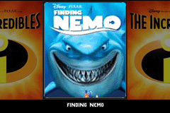
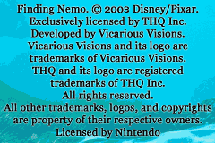

2 Games in 1 - Finding Nemo + The Incredibles (Europe)
Stateless / Passcode
Cartridge Identity
- Game Code
BINP(FamilyBIN)- Header Title
NEMOINCREDIB- Maker / Revision
78/ rev0- ROM Size
- 16.0 MiB (16,777,216 B)
- Save Media
None / Unknown- SHA-256
a50c8a3715fd59e43daea98c172fbdb4f4019881c6649c3acd5601b16e2e9305- Engine / SDK Group
comm-005(81 families)
Screenshots


Cartridge Storage Architecture: Stateless / Passcode
Zero non-volatile battery hardware: This cartridge PCB contains ROM only (no SRAM, Flash, or EEPROM chips). Progression is preserved via on-screen passcodes or session-only gameplay. No
.sav file is generated or required.
ROM Assets, Compression & Audio
- BIOS Compression
- LZ77 (
0x10): 140 streams · RLE (0x30): 3 streams - ROM Pointer Tables
- 148 tables (14 pointing to validated compressed streams)
- SDK Backup Tags
- None
Hardware MMIO Subsystems
dma_transfer0x87ea364,0x87eaa80,0x87eaa88ppu_display0x87e8e48,0x87e8e84,0x87e9d98,0x8811264,0x88242fc
Regional Variants & Revisions (Family BIN)
- 2 Games in 1 - Alla Ricerca di Nemo + Gli Incredibili - Una 'Normale' Famiglia di Supereroi (Italy) (Es,It+It) (
BINY, 16 MiB) - 2 Games in 1 - Buscando a Nemo + Los Increibles (Spain) (Es,It+Es) (
BINZ, 16 MiB) - 2 Games in 1 - Findet Nemo + Die Unglaublichen (Germany) (
BIND, 16 MiB) - 2 Games in 1 - Finding Nemo + The Incredibles (Europe) (Fr,Nl) (
BINX, 16 MiB)